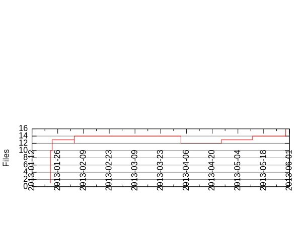

Files
General
Activity
Authors
Files
Lines
Tags
Total files
15
Total lines
2981
Average file size
19873.33 bytes
File count by date

Extensions
Extension
Files (%)
Lines (%)
Lines/file
3 (20.00%)
1990 (66.76%)
663
S
1 (6.67%)
53 (1.78%)
53
bin
1 (6.67%)
18 (0.60%)
18
c
1 (6.67%)
102 (3.42%)
102
sh
5 (33.33%)
750 (25.16%)
150
txt
3 (20.00%)
152 (5.10%)
50